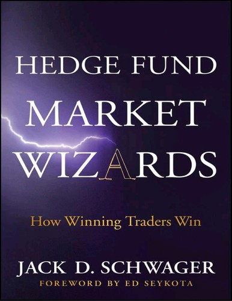

2001年到2010年间，杰克·施瓦格（Jack D. Schwager）在伦敦的对冲基金顾问机构Fortune Group担任合伙人，近距离接触了大量对冲基金经理的实际操作与业绩记录，这段经历让他在原有的"金融怪杰"系列之外，专门写出一本聚焦对冲基金行业的访谈集。2012年1月由John Wiley & Sons出版的《对冲基金奇才》（Hedge Fund Market Wizards）请到了同为"金融怪杰"系列受访者的埃德·塞科塔（Ed Seykota）撰写序言。与前几部作品不同，这一次施瓦格挑选采访对象的标准更严苛：必须拥有可验证的长期业绩记录，且收益与风险的比例要经得起推敲。出版社把它列为"金融怪杰"访谈系列的第四部。
全书收录了十五位对冲基金经理的访谈。桥水基金（Bridgewater Associates）创始人瑞·达利欧（Ray Dalio）在访谈中回顾了1971年尼克松政府宣布美元与黄金脱钩当天的经历——那次意外让他明白货币贬值与印钞往往利好股市，也让他此后不再轻信决策者的公开表态；他提出"不要对抗美联储，除非你有充分理由相信它的政策不会奏效"，并把配置不相关资产称为"投资的圣杯"，认为如果各头寸的驱动因素真正独立，投资组合的收益风险比最多可以改善到五倍。他还区分了"驱动因素"与"相关性"——前者是因，后者只是果，构建组合时不能把两者混为一谈。曾受索罗斯基金栽培的宏观交易员科尔姆·奥谢伊（Colm O'Shea）在访谈中讲述了自己如何通过读懂市场叙事而非单纯盯数据来判断趋势拐点。
书中另几位受访者的经历同样具体。杰米·迈伊（Jamie Mai）所在的康沃尔资本（Cornwall Capital）后来因迈克尔·刘易斯（Michael Lewis）的《大空头》（The Big Short）而广为人知——这家由几个业余出身的年轻人管理的小型基金，早在2008年次贷危机全面爆发前就通过做空次级抵押贷款相关的CDO获利。乔尔·格林布拉特（Joel Greenblatt）是高谭资本（Gotham Capital）创始人，也是"神奇公式"选股法与《股市稳赚》（You Can Be a Stock Market Genius）一书的作者，他在访谈中拆解了这套结合低估值与高资本回报率的量化筛选逻辑。数学家爱德华·索普（Edward Thorp）则回忆了自己如何把二十一点算牌的统计方法（其著作《击败庄家》即由此而来）迁移到金融市场，创立了普林斯顿/纽波特合伙公司（Princeton/Newport Partners），成为量化对冲和统计套利最早的实践者之一，早于华尔街大多数量化部门的成立。私人交易员乔·维迪奇（Joe Vidich）与专攻美国国债期货的斯科特·拉姆齐（Scott Ramsey）代表了书中另一类受访者——他们不必向外部投资人交代业绩，反而因此能在方法论上做更极端的取舍，比如把交易品种压缩到极少数、只在自己有明显优势的少数几种模式上反复下注。
塞科塔在为本书撰写的序言中写道："施瓦格的书，是所有从事交易、学习交易或甄选交易员者的核心阅读材料。"（Schwager's books are essential reading for anyone who trades, wants to trade, or wants to pick a trader.）2013年5月，机械工业出版社引进中文版，定名《对冲基金奇才》，副标题"常胜交易员的秘籍"，由何澍鑫、刘姝君、徐君岭翻译，收入"华章经典·金融投资"丛书。施瓦格在访谈之后归纳出四十条"金融怪杰法则"，其中包括仓位规模有时比入场价更重要、无事可做时保持空仓，以及不存在适用于所有人的交易圣杯。与前作相比，这本书里的十五个人几乎都在管理外部投资人的资金，因此访谈更多落在如何控制回撤、如何向机构投资者解释业绩波动这类现实问题上，而不只是个人交易技巧。